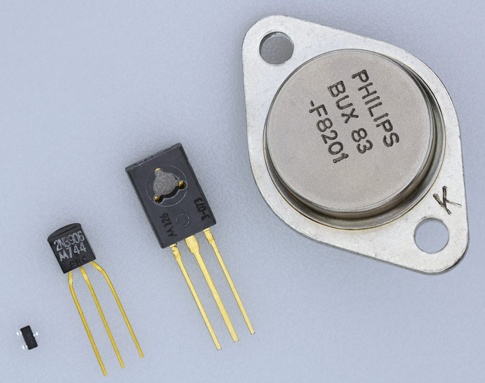
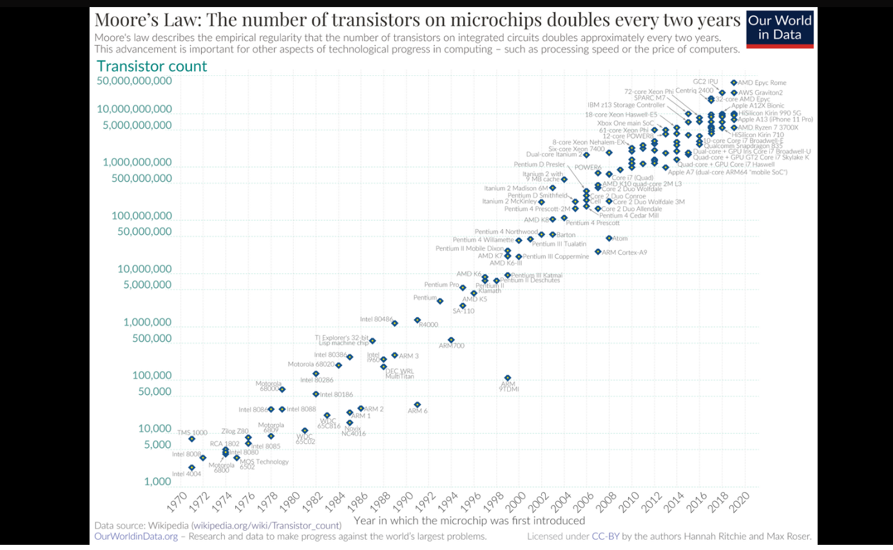
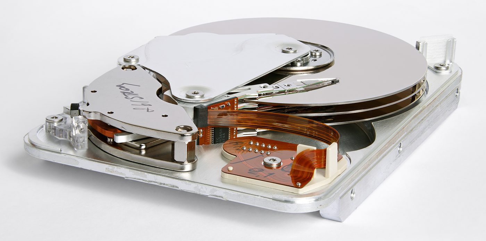

Une machine ne connaît que deux états : le courant passe, ou il ne passe pas. Tout le reste — les nombres, les textes, les images, les adresses des machines sur Internet — se construit là-dessus. Voici comment on compte avec deux chiffres, et comment on mesure ce que ça pèse.
Comprendre pourquoi une machine ne compte qu'avec deux chiffres, savoir lire et écrire un nombre en binaire, et découvrir l'octet — l'unité de base de tout ce qui est numérique.
Au cœur d'un processeur, il y a des transistors — des centaines de milliards sur une puce moderne. Un transistor n'est rien d'autre qu'un interrupteur commandé : le courant passe, ou il ne passe pas. Rien entre les deux.

C'est de là que vient tout le reste. Une machine qui devrait distinguer dix niveaux de tension différents se tromperait sans arrêt : la moindre variation de température, la moindre longueur de fil, et 6 volts deviennent 5. Avec deux états bien séparés — « presque rien » et « franchement quelque chose » — l'erreur devient très improbable. Le binaire n'est pas un choix esthétique : c'est ce que la physique rend fiable.
Parce que nous avons dix doigts. C'est tout. La base 10 nous paraît naturelle parce qu'on l'apprend à cinq ans, mais elle n'a rien d'obligatoire — et nous en utilisons d'autres sans y penser : nos heures se comptent par 60 minutes, nos minutes par 60 secondes, héritage direct des mathématiciens de Babylone, il y a près de quatre mille ans.
Une base, c'est simplement le nombre de chiffres dont on dispose avant de devoir « passer à la colonne suivante ». En base 10, on a dix chiffres (0 à 9) et après 9 vient 10. En base 2, on n'en a que deux : après 1 vient 10. Même mécanique, moins de chiffres.
Deux choses à lire dans cette ligne, et ce sont les deux qui comptent : le chiffre dit combien de fois, le rang dit combien vaut chaque fois. Un chiffre ne veut rien dire tout seul — le 5 de 3506 ne vaut pas cinq, il vaut cinq cents. Et le 0 n'est pas rien : il tient la place, sans lui 3506 deviendrait 356.
Dès qu'on manipule plusieurs bases, un nombre écrit tout seul devient ambigu. Regarde 1011 : en base 2 il vaut onze, en base 10 il vaut mille onze. Même dessin, deux nombres qui n'ont rien à voir.
Pour lever le doute, on écrit la base en petit, en bas à droite du nombre :
Facultatif, non évalué, et ça ne compte pas dans ta progression. C'est pour ceux que ça démange.
🎬 Une vidéo de Veritasium, avec le professeur Andrea Morello (université de Nouvelle-Galles du Sud). Elle descend jusqu'à l'échelle des atomes.
🇬🇧 Elle est en anglais, sans doublage. Active les sous-titres (icône ⚙ du lecteur), et n'hésite pas à les mettre en français : la traduction automatique est imparfaite, mais elle suffit largement ici.
⏱️ Où chercher : les cinq réponses du QCM ci-dessous sont dispersées entre la 3ᵉ et la 8ᵉ minute. Le début pose le décor, tu peux le regarder sans prendre de notes. Mets en pause dès qu'un chiffre est cité.
Avec tes mots : recopier une phrase de la vidéo ou d'un site ne vaut rien ici, et se voit tout de suite. Si un point t'a échappé, dis-le — c'est une information utile, pas une faute. Une fois ta réponse envoyée, un graphique apparaîtra.

Le graphique s'arrête en 2020 ; depuis, la courbe monte toujours. La puce Apple M4 (mai 2024) compte 28 milliards de transistors, et le processeur graphique Nvidia Blackwell (2024) en aligne 208 milliards — soit, en quatre ans, à peu près le quadruple du dernier point tracé. (vérifié en août 2026)
À l'étape précédente, tu as décomposé 4073 : les rangs valaient 1, 10, 100, 1000. Ces nombres ne sortent pas de nulle part — ce sont les puissances de dix.
Une puissance, c'est une multiplication répétée. On écrit 25, on lit « deux puissance cinq », et cela veut dire 2 × 2 × 2 × 2 × 2 = 32. Le petit chiffre en haut ne dit pas par combien on multiplie : il dit combien de fois.
Une base, un mécanisme : le rang le plus à droite vaut toujours base0 = 1, et chaque rang vers la gauche monte d'une puissance.
| Rang, depuis la droite | En base 10 | En base 2 |
|---|---|---|
| le 1er | 100 = 1 | 20 = 1 |
| le 2e | 101 = 10 | 21 = 2 |
| le 3e | 102 = 100 | 22 = 4 |
| le 4e | 103 = 1000 | 23 = 8 |
| le 5e | 104 = 10 000 | 24 = 16 |
Même mécanique des deux côtés. Ce qui change, c'est le nombre qu'on élève à la puissance : dix quand on a dix chiffres, deux quand on n'en a que deux.
Chaque case est un bit : clique dessus (ou Tab puis Entrée) pour la faire passer de 0 à 1. Le total se met à jour tout seul.
Sous chaque case, le tableau rappelle la puissance de 2 du rang, et au-dessus sa valeur. L'exemple affiché au départ, 100110112, vaut 15510 : 128 + 16 + 8 + 2 + 1. Retiens-le : tu le reverras dans le thème Internet, où les quatre nombres d'une adresse IP se lisent exactement comme ça.
Le jour de l'évaluation, tu n'auras pas le tableau interactif : tu auras une feuille. Voici le geste à savoir refaire. On part de la droite avec 20 = 1, puis on avance de puissance en puissance jusqu'au chiffre le plus à gauche.
Sept chiffres, donc sept rangs : on commence à 20 tout à droite et on monte jusqu'à 26 tout à gauche. Les termes multipliés par 0 ne rapportent rien — on peut les sauter.
Si tu as besoin du tableau pour trouver la réponse, tu n'es pas encore prêt pour l'évaluation. Il sert à contrôler, pas à résoudre.
101 vaut
en décimal.1100 vaut
en décimal.10000001 vaut
en décimal.Tu sais lire un nombre binaire. Reste le trajet inverse : partir de 155 et retrouver 10011011. Il y a deux façons de faire. Elles donnent exactement le même résultat — ce sont deux chemins vers le même endroit. Regarde les deux, garde celle qui te parle.
On reprend les poids 128, 64, 32, 16, 8, 4, 2, 1 et on les passe en revue de gauche à droite. À chaque poids, une seule question : est-ce qu'il tient dans ce qui me reste ? Si oui, on écrit 1 et on le soustrait ; si non, on écrit 0 et on passe au suivant.
| Poids | Tient dans ce qui reste ? | Bit | Reste |
|---|---|---|---|
| 128 | 128 > 77 — non | 0 | 77 |
| 64 | oui : 77 − 64 | 1 | 13 |
| 32 | 32 > 13 — non | 0 | 13 |
| 16 | 16 > 13 — non | 0 | 13 |
| 8 | oui : 13 − 8 | 1 | 5 |
| 4 | oui : 5 − 4 | 1 | 1 |
| 2 | 2 > 1 — non | 0 | 1 |
| 1 | oui : 1 − 1 | 1 | 0 |
On lit la colonne des bits de haut en bas : 01001101. Le zéro de tête ne sert à rien, on l'enlève : 77 = 1001101.
Le même trajet, pas à pas : à chaque clic, on passe au poids suivant et on dit à voix haute la question qu'on se pose. Change le nombre pour en essayer un autre.
L'outil commence directement au plus grand poids utile — pour 77, c'est 64 et non 128 : commencer plus haut n'écrirait que des zéros inutiles devant le nombre.
Avantage de la méthode : rapide, faisable de tête, et elle réutilise les poids que tu connais déjà. Inconvénient : il faut garder le reste en tête à chaque ligne.
On divise le nombre par 2, encore et encore, jusqu'à tomber sur un quotient nul. À chaque division, on garde le reste — forcément 0 ou 1. Puis on remonte les restes, du dernier au premier : c'est l'écriture binaire.
| Division | Quotient | Reste |
|---|---|---|
| 77 ÷ 2 | 38 | 1 |
| 38 ÷ 2 | 19 | 0 |
| 19 ÷ 2 | 9 | 1 |
| 9 ÷ 2 | 4 | 1 |
| 4 ÷ 2 | 2 | 0 |
| 2 ÷ 2 | 1 | 0 |
| 1 ÷ 2 | 0 — on s'arrête | 1 |
Les restes sont sortis dans l'ordre 1, 0, 1, 1, 0, 0, 1. On les remonte, du dernier au premier :
Même nombre, même résultat que par la méthode A. C'est le sens de lecture qui fait toute la difficulté : de bas en haut.
Voici le même calcul posé à la main, division après division. Clique pour dérouler.
Avantage : aucune retenue à garder en tête, on ne fait que diviser par 2. Inconvénient : il faut penser à lire les restes de bas en haut — c'est l'erreur classique.
Écris les bits à la suite, sans espace. Un zéro devant le nombre est accepté.
Un bit tout seul ne dit pas grand-chose : il ne distingue que deux possibilités. On travaille donc par paquets de 8 bits, et ce paquet porte un nom : l'octet. C'est l'unité de base de tout ce qui est numérique — la taille d'un fichier, la mémoire d'un téléphone, un nombre d'une adresse IP : tout se compte en octets.
Pourquoi huit ? Parce que 8 bits suffisent à coder tous les caractères d'un texte — lettres, chiffres, ponctuation — et que c'est un compte commode pour la machine. Le mot anglais est byte : tu le croiseras partout, sur les fiches techniques comme dans les jeux.
Ne le crois pas sur parole : écris-les. Voici toutes les combinaisons possibles avec 1, 2, 3 puis 4 bits. Le chiffre coloré est celui qu'on vient d'ajouter à gauche.
0
1
00
01
10
11
000
001
010
011
100
101
110
111
0000
0001
0010
0011
0100
0101
0110
0111
1000
1001
1010
1011
1100
1101
1110
1111
Les deux dernières colonnes ne disent pas la même chose, et c'est tout l'enjeu : à gauche combien de valeurs, à droite lesquelles. Sur 4 bits : 16 combinaisons, qui vont de 0 à 15.
| Nombre de bits | Calcul | Combinaisons | Valeurs possibles |
|---|---|---|---|
| 1 | 21 | 2 | de 0 à 1 |
| 2 | 22 = 2 × 2 | 4 | de 0 à 3 |
| 3 | 23 = 2 × 2 × 2 | 8 | de 0 à 7 |
| 4 | 24 | 16 | de 0 à 15 |
| 5 | 25 | de 0 à | |
| 6 | 26 | de 0 à | |
| 7 | 27 | de 0 à | |
| 8 — un octet | 28 | de 0 à | |
| n — le cas général | 2n | de 0 à |
Toute machine reliée à un réseau porte un numéro qui l'identifie : son adresse IP. Dans sa forme la plus répandue, elle s'écrit avec quatre nombres séparés par des points — par exemple 192.168.1.1, l'adresse que portent beaucoup de box internet.
Ces quatre nombres ne sont pas quelconques : chacun tient dans un octet. Aucun ne peut donc dépasser 255. Une adresse qui contiendrait 192.168.1.300 n'existe pas, et pour une raison qui n'a rien d'arbitraire : 300 ne rentre pas dans huit bits. On y revient en détail dans le thème Internet ; ici, retiens seulement d'où viennent ces quatre nombres.
00000000 vaut 0, 11111111 vaut 255. C'est l'unité dans laquelle se mesure tout le numérique : fichiers, mémoire, et les quatre nombres d'une adresse IP.Treize conversions dans les deux sens, puis un classement. La liste est la même pour tout le monde : vous pouvez chercher à plusieurs, comparer vos résultats et vous expliquer les erreurs. C'est fait pour.
L'entraînement est en trois groupes, chacun avec son bouton Vérifier et sa correction détaillée : tu corriges A avant d'attaquer B, sans attendre d'avoir fait les treize. L'étape n'est validée que lorsque les trois groupes et le classement sont faits.
Rien de nouveau n'est introduit ici : c'est de l'entraînement pur, sur ce que tu as vu aux étapes 1.2 et 1.3. Il n'y a donc pas de « à retenir » à la fin — le tien est déjà écrit plus haut.
Écris les nombres sans espace : 10101100, pas 1010 1100. Un zéro devant une écriture binaire est accepté. Deux indices sont disponibles sous chaque réponse fausse : le premier remet sur la piste, le second dépanne vraiment.
1000111010000001101110001011101100110110110010111111111C'est exactement comme en base 10 : entre 4073 et 892, tu n'as pas besoin de calculer — l'un a quatre chiffres, l'autre trois.
Une base, c'est le nombre de chiffres différents dont on dispose. Dix en base 10, deux pour une machine — ses composants ne distinguent que deux états électriques. Le principe ne change jamais : chaque rang vaut une puissance de la base.
On l'écrit de droite à gauche, en partant de 1 et en doublant à chaque case. Huit cases suffisent pour toute l'année.
Même résultat, geste différent. Essaie les deux au moins une fois, puis garde celle qui te va : c'est celle-là que tu utiliseras en évaluation. Ici, les deux partent de 77.
Je descends le tableau, du plus grand poids au plus petit. À chaque case : est-ce que ça rentre ? Si oui, j'écris 1 et je soustrais. Sinon, 0.
Je divise par 2 jusqu'à tomber sur 0, en notant chaque reste (0 ou 1). Puis je remonte la colonne des restes de bas en haut.
Chaque bit ajouté double le nombre de combinaisons : peu de cases suffisent pour de très grands nombres.
Méthode au choix. Les réponses sont écrites à l'envers sous l'exercice : retourne la feuille, ou ton écran, pour te corriger.
Rien n'est au programme, rien n'est évalué. Si le sujet t'a plu, voici des mots-clés à chercher — chacun ouvre une piste.
Passer de l'octet au téraoctet, comprendre pourquoi un disque de 500 Go n'en affiche que 465, et entrevoir comment on code une couleur.
Toute la séance 1 a servi à ranger des nombres dans des octets. Mais une machine ne stocke pas que des nombres : elle stocke des textes, des photos, des morceaux de musique, des films.
En réalité, si. Une photo, pour une machine, c'est aussi des nombres : elle est découpée en une grille de petits carrés, et chaque carré se décrit par quelques nombres. Des nombres qui, tu le sais maintenant, occupent des octets. Une photo pèse donc un certain nombre d'octets — beaucoup. Comment une image se transforme en nombres, c'est le thème Photographie numérique qui le montrera ; ici, une seule chose compte : tout finit en octets, et ça se mesure.
Une photo pèse quelques millions d'octets, un film quelques milliards. Écrire ces nombres en entier serait illisible : on utilise donc des préfixes. k pour mille, M pour un million, G pour un milliard, T pour mille milliards.
| Unité | Nom | Puissance de 10 | En octets |
|---|---|---|---|
| o | octet | 10⁰ | 1 |
| ko | kilooctet | 10³ | 1 000 |
| Mo | mégaoctet | 10⁶ | 1 000 000 |
| Go | gigaoctet | 10⁹ | 1 000 000 000 |
| To | téraoctet | 10¹² | 1 000 000 000 000 |
D'une ligne à la suivante, on multiplie par 1000. Donc 1 To = 1000 Go = 1 000 000 Mo. C'est la seule chose à savoir faire.
| Objet | Ordre de grandeur |
|---|---|
| Un caractère de texte | 1 octet environ |
| Un SMS de 160 caractères | quelques centaines d'octets |
| Une chanson en MP3 | quelques Mo |
| Une photo prise au téléphone | quelques Mo |
| Un film en haute définition | quelques Go |
| Le disque d'un ordinateur récent | 1 ou 2 To |
Ce sont des ordres de grandeur, pas des valeurs exactes : une photo peut peser 2 Mo ou 8 Mo selon l'appareil et le réglage. Ce qu'il faut retenir, c'est l'étage — pas le chiffre.
Tu achètes un disque dur de 500 Go. Tu le branches. L'ordinateur affiche 465 Go. Trente-cinq gigaoctets se sont volatilisés entre le magasin et ton bureau. Personne ne t'a volé : les deux comptent juste dans des unités différentes.
Une machine compte par puissances de 2. Or 2¹⁰ ne fait pas 1000, il fait 1024. C'est tout près, et c'est ce « tout près » qui pose problème : les informaticiens ont longtemps appelé « kilo » ce paquet de 1024 octets, parce que 2,4 % d'écart ne se voyait pas.
Sauf que l'écart se cumule à chaque étage. À la quatrième multiplication, il atteint 10 % :
| Étage | Le fabricant compte… | La machine compte… | Écart |
|---|---|---|---|
| 1 | 1 ko = 1000 o | 1 kio = 2¹⁰ = 1 024 o | 2,4 % |
| 2 | 1 Mo = 10⁶ o | 1 Mio = 2²⁰ = 1 048 576 o | 4,9 % |
| 3 | 1 Go = 10⁹ o | 1 Gio = 2³⁰ = 1 073 741 824 o | 7,4 % |
| 4 | 1 To = 1012 o | 1 Tio = 240 = ? | ? |
La dernière ligne est à toi : c'est l'exercice ci-dessous.
kio, Mio, Gio, Tio — « kibioctet », « mébioctet », « gibioctet », « tébioctet » — sont les vrais noms des multiples binaires, normalisés en 1998. Tu n'as pas à les mémoriser : il faut juste savoir qu'ils existent, et pourquoi.
v2 est la valeur de référence : celle à laquelle on compare, celle qui vaut 100 %. Les deux barres verticales veulent dire « sans le signe » : un écart ne se compte pas en négatif. À toi de décider, ici, qui est v1 et qui est v2 — c'est la seule vraie difficulté de la question.
Réponse : % (arrondis au centième).Écris les nombres sans espace, et les décimales avec une virgule.

⏱️ Quelques minutes, pas plus. Rien ici n'est à savoir pour l'évaluation : cette étape sème une idée que tu retrouveras en fin d'année. Il n'y a rien à rendre — elle se marque faite dès que tu bouges un curseur.
Tu sais maintenant qu'un octet contient une valeur de 0 à 255. Voici à quoi ça sert, une fois sur trois millions de fois : une image numérique est une grille de pixels, et chaque pixel se code par trois nombres — la dose de rouge, la dose de vert, la dose de bleu. Chacune tient sur un octet, donc va de 0 à 255.
Une dose de rouge de 9010 se range donc en mémoire sous la forme 010110102 — huit chiffres, un octet, exactement ce que tu sais lire depuis l'étape 1.2.
Trois octets par pixel. Et comme chaque canal offre 256 nuances, le nombre de couleurs possibles est 256 × 256 × 256 = 16 777 216 — près de 16,7 millions. C'est de là que vient la mention « 16 millions de couleurs » sur les fiches techniques des écrans.
Essaie : les trois à 0, puis les trois à 255. Puis rouge et vert à fond, bleu à zéro — la couleur obtenue surprend souvent.
Sous chaque bande, la dose est écrite en binaire, sur exactement huit chiffres : c'est un octet, celui de la séance 1. Regarde-les bouger quand tu déplaces les curseurs — et vérifie : à 255, les huit chiffres passent tous à 1 ; à 0, tous à 0. La ligne du bas montre les trois octets à la suite, tels que la machine les range pour ce seul pixel.
Douze questions qui balaient tout le module, de la première étape à la dernière : ce que c'est qu'une base, les deux sens de conversion, les puissances de 2, le nombre de combinaisons, les préfixes et les ordres de grandeur.
Même questionnaire pour tout le monde : comparez vos réponses. Tu peux le refaire autant de fois que tu veux — il n'y a pas de note.
Si une question te bloque, note son numéro et retourne voir l'étape correspondante : c'est exactement à ça que sert ce bilan.